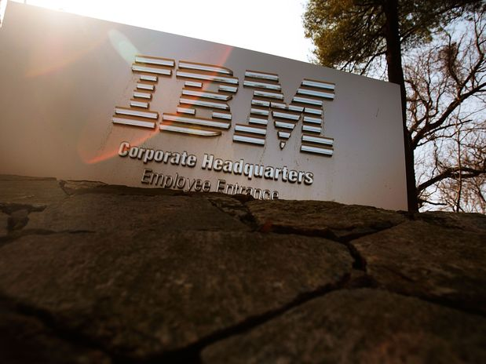

IBM avança no ramo da computação quântica(){
Notícias

Empresa americana quer desenvolver sistemas de computação quântica que
podem ser aplicados à solução de problemas existentes no mundo
Apesar dos avanços teóricos relacionados à computação quântica, ainda não se sabe o que se pode ser conseguido na prática. O objetivo da IBM é desenvolver sistemas aplicados de computação quântica que possam ser utilizados para resolução de problemas do mundo real. "O trabalho feito no computador quântico é apenas uma experiência das forças brutas da física", afirma Mathias Steffen, um dos cientistas-chefe da IBM.
A Física Quântica, que se baseia em novos postulados, e a Teoria da Relatividade de Einstein são consideradas as teorias mais importantes do século XX. Ela descreveu o comportamento dos átomos e das partículas que a Física clássica, sobretudo, a mecânica Newtoniana, não conseguia fazer, permitindo revelar algumas propriedades da radiação eletromagnética.
Em meados de fevereiro deste ano, a IBM apresentou grandes avanços no desenvolvimento do que chamou de "computador quântico" e anunciou uma notícia, no mínimo, animadora: a empresa acredita que estamos nos aproximando de uma realidade na qual será possível acelerar a fabricação de computadores quânticos em grande escala.
Os pesquisadores acreditam que conseguirão isso entre 10 e 15 anos. Sistemas baseados na ciência quântica serão capazes de levar o cálculo efetuados por computadores para uma nova fronteira.
Este avanço divulgado pelos cientistas da IBM, reunidos na conferência anual da Sociedade de Física Americana, possibilitará uma redução das margens de erros dos cálculos elementares. Isso permitirá manter por mais tempo a integridade das propriedades da mecânica quântica nos qubits. Além disso, será possível executar um conjunto de tarefas extremamente complexas e a solução de problemas matemáticos que ainda não foram resolvidos.
As propriedades especiais de qubits da IBM permitirão que os computadores quânticos trabalhem em milhões de cálculos ao mesmo tempo, enquanto os PCs desktop podem lidar com uma quantidade de cálculos simultâneos infinitamente menor.
Uma coisa é certa: a evolução das pesquisas na àrea de computação quântica cresce a cada dia e, sem dúvida, estamos cada vez mais perto de ver computadores quânticos trabalharem de forma correta e estável.
Referências:
Revista Abril
Terra - Tecnologia
}